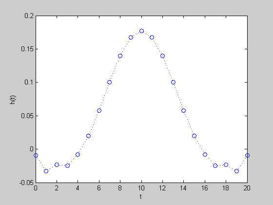
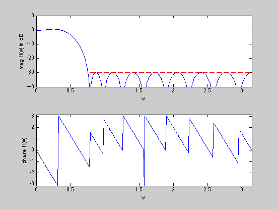

Minimize stopband ripple of a linear phase lowpass FIR filter
n = 10;
wpass = 0.12*pi;
wstop = 0.24*pi;
atten_level = -30;
N = 30*n+1;
w = linspace(0,pi,N);
A = [ones(N,1) 2*cos(kron(w',[1:n]))];
ind = find((0 <= w) & (w <= wpass));
Ap = A(ind,:);
ind = find((wstop <= w) & (w <= pi));
Us = 10^(atten_level/20)*ones(length(ind),1);
As = A(ind,:);
cvx_begin
variable delta
variable h(n+1,1);
minimize( delta )
subject to
Ap*h <= delta;
inv_pos(Ap*h) <= delta;
abs( As*h ) <= Us;
cvx_end
disp(['Problem is ' cvx_status])
if ~strfind(cvx_status,'Solved')
return
else
h = [flipud(h(2:end)); h];
fprintf(1,'The optimal minimum passband ripple is %4.3f dB.\n\n',...
20*log10(delta));
end
figure(1)
plot([0:2*n],h','o',[0:2*n],h','b:')
xlabel('t'), ylabel('h(t)')
figure(2)
H = exp(-j*kron(w',[0:2*n]))*h;
subplot(2,1,1)
plot(w,20*log10(abs(H)),[wstop pi],[atten_level atten_level],'r--');
axis([0,pi,-40,10])
xlabel('w'), ylabel('mag H(w) in dB')
subplot(2,1,2)
plot(w,angle(H))
axis([0,pi,-pi,pi])
xlabel('w'), ylabel('phase H(w)')
Calling SDPT3: 606 variables, 12 equality constraints
For improved efficiency, SDPT3 is solving the dual problem.
------------------------------------------------------------
num. of constraints = 12
dim. of sdp var = 74, num. of sdp blk = 37
dim. of socp var = 458, num. of socp blk = 229
dim. of linear var = 37
*******************************************************************
SDPT3: Infeasible path-following algorithms
*******************************************************************
version predcorr gam expon scale_data
HKM 1 0.000 1 0
it pstep dstep pinfeas dinfeas gap mean(obj) cputime
-------------------------------------------------------------------
0|0.000|0.000|3.2e+02|3.7e+01|1.8e+04| 1.024119e+01| 0:0:00| chol 1 1
1|0.671|0.902|1.1e+02|3.7e+00|3.0e+03| 3.116202e+00| 0:0:00| chol 1 1
2|0.961|0.803|4.1e+00|7.4e-01|4.1e+02| 2.752908e+00| 0:0:00| chol 1 1
3|1.000|1.000|6.7e-05|1.0e-03|2.9e+01| 4.829566e+00| 0:0:00| chol 1 1
4|0.924|0.804|8.3e-05|2.9e-04|4.2e+00|-3.675353e-01| 0:0:00| chol 1 1
5|0.471|1.000|4.4e-05|2.7e-05|2.3e+00|-3.519387e-01| 0:0:00| chol 1 1
6|0.918|1.000|3.6e-06|9.8e-06|6.3e-01|-8.371622e-01| 0:0:00| chol 1 1
7|1.000|0.939|6.3e-10|1.4e-06|1.8e-01|-9.792024e-01| 0:0:00| chol 1 1
8|0.837|0.920|1.7e-10|1.2e-07|4.4e-02|-1.033054e+00| 0:0:00| chol 1 1
9|0.869|0.875|2.1e-11|1.6e-08|1.0e-02|-1.047684e+00| 0:0:01| chol 1 1
10|0.810|0.788|4.0e-12|3.5e-09|3.3e-03|-1.050300e+00| 0:0:01| chol 1 1
11|0.580|0.763|1.7e-12|8.4e-10|1.7e-03|-1.050873e+00| 0:0:01| chol 1 1
12|0.660|0.801|8.0e-13|1.7e-10|7.0e-04|-1.051264e+00| 0:0:01| chol 1 1
13|0.706|0.819|5.2e-13|3.2e-11|2.5e-04|-1.051461e+00| 0:0:01| chol 1 1
14|0.861|0.854|2.4e-13|5.6e-12|4.5e-05|-1.051557e+00| 0:0:01| chol 1 1
15|0.891|0.843|2.3e-13|1.9e-12|6.0e-06|-1.051575e+00| 0:0:01| chol 1 1
16|0.960|0.901|1.2e-13|1.2e-12|3.7e-07|-1.051578e+00| 0:0:01| chol 1 1
17|0.983|0.972|2.7e-13|1.0e-12|1.2e-08|-1.051578e+00| 0:0:01|
stop: max(relative gap, infeasibilities) < 1.49e-08
-------------------------------------------------------------------
number of iterations = 17
primal objective value = -1.05157800e+00
dual objective value = -1.05157801e+00
gap := trace(XZ) = 1.17e-08
relative gap = 3.78e-09
actual relative gap = 3.78e-09
rel. primal infeas = 2.67e-13
rel. dual infeas = 1.03e-12
norm(X), norm(y), norm(Z) = 1.1e+00, 1.1e+00, 1.2e+01
norm(A), norm(b), norm(C) = 8.2e+01, 2.0e+00, 9.6e+00
Total CPU time (secs) = 0.9
CPU time per iteration = 0.1
termination code = 0
DIMACS: 2.7e-13 0.0e+00 5.0e-12 0.0e+00 3.8e-09 3.8e-09
-------------------------------------------------------------------
------------------------------------------------------------
Status: Solved
Optimal value (cvx_optval): +1.05158
Problem is Solved
The optimal minimum passband ripple is 0.437 dB.
 